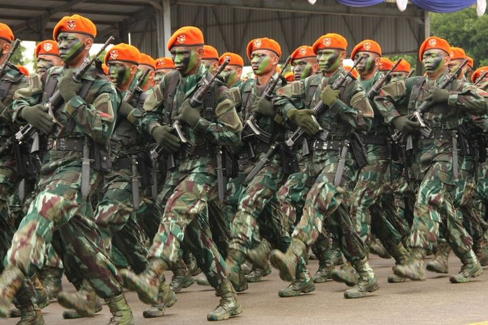
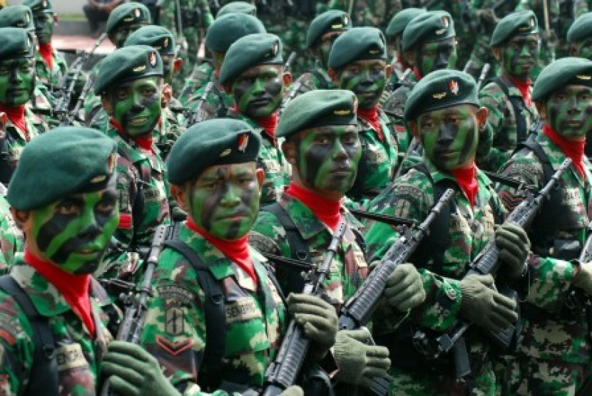

Indonesia dan Amerika Serikat berupaya memperkuat kerja sama perdagangan dan investasi yang bisa terjadi dalam sektor energi, teknologi, atau manufaktur yang diadakan di Kanada atau melalui perusahaan yang beroperasi di Kanada. Ada banyak perusahaan multinasional Amerika yang juga beroperasi di Indonesia, dan melalui platform bisnis global di Kanada, perusahaan Indonesia bisa memperluas jaringan atau menjalin hubungan dengan mitra bisnis Amerika di sana.


1. Pelatihan dan Pendidikan Militer
Program IMET (International Military Education and Training):
Melalui program pelatihan militer internasional yang didukung Kanada, personel militer Indonesia sering mengikuti pelatihan dan pendidikan militer di Kanada. Program ini mencakup pelatihan di bidang kepemimpinan militer, manajemen konflik, dan keamanan maritim.
Pertukaran Akademik Militer:
Kedua negara juga terlibat dalam pertukaran akademik antara lembaga pendidikan militer, seperti Indonesian Defense University dengan lembaga pendidikan militer Kanada. Pertukaran ini meliputi kursus tentang strategi pertahanan, keamanan internasional, dan pengembangan kapasitas kepemimpinan.
2. Keamanan Maritim dan Operasi Patroli Bersama
Keamanan Laut dan Anti-Pembajakan:
Kanada dan Indonesia memiliki kepentingan bersama dalam menjaga keamanan maritim, khususnya di kawasan Selat Malaka yang merupakan jalur perdagangan strategis. Kedua negara bekerja sama dalam operasi patroli laut untuk mengatasi pembajakan dan perdagangan ilegal di perairan internasional.
Latihan Keamanan Maritim:
Kanada sering berpartisipasi dalam latihan keamanan maritim yang diselenggarakan oleh ASEAN Regional Forum (ARF), di mana Indonesia menjadi anggota aktif. Melalui latihan bersama ini, kedua negara berkolaborasi dalam peningkatan kemampuan deteksi dan respon terhadap ancaman maritim, termasuk penyelundupan narkoba dan perdagangan manusia.
3. Kerja Sama dalam Penanggulangan Terorisme
Pertukaran Informasi Intelijen:
Dalam upaya memerangi terorisme, Indonesia dan Kanada aktif bertukar informasi intelijen melalui Joint Terrorism Task Force dan kerja sama dengan lembaga internasional seperti INTERPOL. Hal ini penting untuk mendeteksi dan menanggulangi jaringan teroris internasional yang beroperasi di kawasan Asia Tenggara.
Program Pelatihan Anti-Terorisme:
Kanada melalui program seperti Counter-Terrorism Capacity Building Program (CTCBP), mendukung pelatihan anti-terorisme bagi aparat keamanan Indonesia. Pelatihan ini meliputi teknik investigasi, manajemen krisis, dan strategi kontra-radikalisasi.
4. Bantuan Kemanusiaan dan Operasi Penanggulangan Bencana
Operasi Bantuan Kemanusiaan:
Kanada sering bekerja sama dengan militer Indonesia dalam operasi bantuan kemanusiaan, terutama saat terjadi bencana alam. Misalnya, ketika terjadi tsunami di Aceh pada 2004, Kanada mengirimkan bantuan logistik dan medis melalui Angkatan Bersenjata Kanada untuk membantu proses evakuasi dan rehabilitasi korban.
Latihan Penanggulangan Bencana:
Kedua negara terlibat dalam latihan gabungan untuk penanggulangan bencana alam, dengan fokus pada peningkatan kapasitas militer dan sipil dalam menghadapi situasi darurat. Latihan ini membantu memperkuat kemampuan koordinasi dalam situasi krisis.
5. Partisipasi dalam Misi Perdamaian PBB
Kontribusi pada Misi Perdamaian:
Indonesia dan Kanada adalah kontributor aktif dalam misi perdamaian PBB. Kedua negara sering bekerja sama dalam misi perdamaian yang ditempatkan di negara-negara yang dilanda konflik, seperti di Afrika dan Timur Tengah. Kolaborasi ini memperkuat komitmen mereka terhadap perdamaian dan stabilitas global.
Pelatihan Pasukan Perdamaian:
Kanada telah berpartisipasi dalam pelatihan pasukan perdamaian Indonesia melalui program pelatihan United Nations Peacekeeping Training Program. Program ini mencakup pelatihan tentang perlindungan sipil, hak asasi manusia, dan mediasi konflik.
6. Kerja Sama di ASEAN Regional Forum (ARF) dan Pertemuan Keamanan Multilateral
ASEAN Regional Forum (ARF):
Kanada merupakan mitra dialog aktif di ARF, di mana Indonesia memainkan peran penting dalam diskusi keamanan kawasan. Kedua negara bekerja sama dalam mempromosikan stabilitas dan keamanan di Asia Tenggara, dengan fokus pada isu-isu seperti keamanan maritim, perdagangan senjata ilegal, dan pencegahan konflik.
Konsultasi Keamanan Bilateral:
Selain berpartisipasi dalam forum multilateral, Indonesia dan Kanada secara rutin mengadakan konsultasi bilateral mengenai isu-isu keamanan, termasuk strategi untuk menghadapi ancaman keamanan baru seperti cybersecurity dan kejahatan lintas negara.
7. Penguatan Kemampuan Cybersecurity
Kerja Sama Cybersecurity:
Mengingat meningkatnya ancaman siber, Indonesia dan Kanada telah memperluas kerja sama mereka di bidang cybersecurity. Kedua negara berbagi pengetahuan dan teknologi dalam melindungi infrastruktur kritis dari serangan siber, serta bekerja sama dalam mengembangkan kebijakan keamanan siber yang efektif.
Pelatihan dan Workshop:
Kanada melalui berbagai inisiatif menawarkan pelatihan dan workshop kepada aparat keamanan Indonesia mengenai cara mengidentifikasi dan merespon serangan siber, termasuk teknik investigasi siber dan mitigasi serangan.
8. Kerja Sama Industri Pertahanan
Transfer Teknologi dan Pengadaan Alutsista:
Kanada telah menjajaki peluang untuk bekerja sama dalam pengadaan alat utama sistem senjata (alutsista) bagi Indonesia, termasuk pesawat, sistem radar, dan peralatan komunikasi militer. Kanada menawarkan transfer teknologi sebagai bagian dari kesepakatan, yang bertujuan untuk meningkatkan kemampuan industri pertahanan Indonesia.
Pameran Industri Pertahanan:
: Partisipasi Kanada dalam pameran pertahanan seperti Indo Defence Expo & Forum di Indonesia memberikan peluang bagi perusahaan pertahanan Kanada untuk menjalin kemitraan dengan perusahaan lokal dan mempromosikan produk-produk teknologi militer yang canggih.